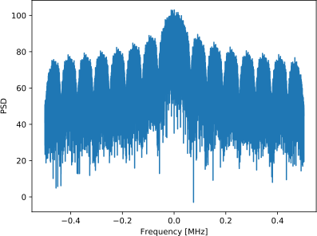

5. PlutoSDR en Python¶

Dans ce chapitre, nous apprenons à utiliser l’API Python pour le PlutoSDR, qui est une radio SDR à faible coût d’Analog Devices. Nous couvrirons les étapes d’installation du PlutoSDR afin de faire fonctionner les pilotes et le logiciel, puis nous discuterons de la transmission et de la réception avec le PlutoSDR en Python.
Installation de logiciels/pilotes¶
Configuration de la VM¶
Bien que le code Python fourni dans ce manuel devrait fonctionner sous Windows, Mac et Linux, les instructions d’installation ci-dessous sont spécifiques à Ubuntu 18. Si vous avez des difficultés à installer le logiciel sur votre OS en suivant les instructions fournies par Analog Devices, je vous recommande d’installer une VM Ubuntu 18 et d’essayer les instructions ci-dessous.
- Installez et ouvrez VirtualBox.
- Créez une nouvelle VM. Pour la taille de la mémoire, je recommande d’utiliser 50% de la RAM de votre ordinateur.
- Créez le disque dur virtuel, choisissez VDI, et allouez dynamiquement la taille. 15 Go devraient suffire. Si vous voulez être vraiment sûr, vous pouvez utiliser plus.
- Téléchargez Ubuntu 18 Desktop .iso- http://releases.ubuntu.com/18.04/
- Démarrez la VM. Il vous demandera le support d’installation. Choisissez le fichier .iso du bureau Ubuntu 18. Choisissez “installer ubuntu”, utilisez les options par défaut, et une fenêtre pop-up vous avertira des changements que vous êtes sur le point d’effectuer. Cliquez sur continuer. Choisissez le nom/mot de passe et attendez que la VM finisse de s’initialiser. Après avoir terminé, la VM va redémarrer, mais vous devez éteindre la VM après le redémarrage.
- Allez dans les paramètres de la VM (l’icône de l’engrenage).
- Sous système > processeur > choisissez au moins 3 processeurs. Si vous avez une carte vidéo réelle, alors dans affichage > mémoire vidéo > choisissez quelque chose de beaucoup plus élevé.
- Démarrez votre VM.
- Je recommande d’installer des addons d’invités VM. Dans la VM, allez dans Devices > Insert Guest Additions CD > cliquez sur run quand une boîte apparaît. Suivez les instructions. Redémarrez la VM. Le presse-papiers partagé peut être activé via Dispositifs > Presse-papiers partagé > Bidirectionnel.
Connecter la PlutoSDR¶
- Si vous utilisez OSX, dans OSX, et non dans la VM, dans les préférences système, activez “kernel extensions”. Puis installez HoRNDIS (vous devrez peut-être redémarrer après).
- Si vous utilisez Windows, installez ce pilote : https://github.com/analogdevicesinc/plutosdr-m2k-drivers-win/releases/download/v0.7/PlutoSDR-M2k-USB-Drivers.exe
- Si vous utilisez Linux, vous ne devriez pas avoir à faire quoi que ce soit de spécial.
- Branchez Pluto sur la machine hôte via le port USB. Veillez à utiliser le port USB central de Pluto, car l’autre ne sert qu’à l’alimentation. Le branchement de Pluto devrait créer une carte réseau virtuelle, c’est-à-dire que Pluto apparaît comme un adaptateur Ethernet USB.
- Sur la machine hôte (pas la VM), ouvrez un terminal ou votre outil ping préféré et effectuez un ping sur 192.168.2.1. Si cela ne fonctionne pas, arrêtez et déboguez l’interface réseau.
- Dans la VM, ouvrez un nouveau terminal
- Effectuez un Ping sur 192.168.2.1. Si cela ne fonctionne pas, arrêtez ici et déboguez. Si cela continue, c’est que quelque chose d’autre à cette adresse IP est sur le réseau, et vous devrez changer l’IP du Pluto (ou de l’autre appareil) avant de continuer.
- Notez l’adresse IP du Pluto car vous en aurez besoin lorsque nous commencerons à utiliser la Pluto en Python.
Installation du pilote PlutoSDR¶
Les commandes de terminal ci-dessous devraient construire et installer la dernière version de :
- libiio, la bibliothèque “multiplateforme” d’Analog Device pour l’interfaçage du matériel.
- libad9361-iio, AD9361 est la puce RF spécifique du PlutoSDR.
- pyadi-iio, l’API Python du Pluto, c’est notre objectif final, mais il dépend des deux bibliothèques précédentes.
sudo apt-get install build-essential git libxml2-dev bison flex libcdk5-dev cmake python3-pip libusb-1.0-0-dev libavahi-client-dev libavahi-common-dev libaio-dev
cd ~
git clone --branch v0.23 https://github.com/analogdevicesinc/libiio.git
cd libiio
mkdir build
cd build
cmake -DPYTHON_BINDINGS=ON ..
make -j$(nproc)
sudo make install
sudo ldconfig
cd ~
git clone https://github.com/analogdevicesinc/libad9361-iio.git
cd libad9361-iio
mkdir build
cd build
cmake ..
make -j$(nproc)
sudo make install
cd ~
git clone https://github.com/analogdevicesinc/pyadi-iio.git
cd pyadi-iio
pip3 install --upgrade pip
pip3 install -r requirements.txt
sudo python3 setup.py install
Test des pilotes PlutoSDR¶
Ouvrez un nouveau terminal (dans votre VM) et tapez les commandes suivantes :
python3
import adi
sdr = adi.Pluto('ip:192.168.2.1') # ou quel que soit l'IP de votre Pluton
sdr.sample_rate = int(2.5e6)
sdr.rx()
Si vous parvenez à ce stade sans erreur, passez aux étapes suivantes.
Changer l’adresse IP de Pluton¶
Si, pour une raison quelconque, l’IP par défaut de 192.168.2.1 ne fonctionne pas parce que vous avez déjà un sous-réseau 192.168.2.0, ou parce que vous voulez que plusieurs Pluto soient connectés en même temps, vous pouvez changer l’IP en suivant les étapes suivantes :
- Modifiez le fichier config.txt sur le périphérique de stockage de masse PlutoSDR (c’est-à-dire le dispositif ressemblant à une clé USB qui apparaît après avoir branché la Pluto). Entrez la nouvelle IP que vous voulez.
- Ejectez le périphérique de stockage de masse (ne débranchez pas la Pluto !). Dans Ubuntu 18, il y a un symbole d’éjection à côté du périphérique PlutoSDR, lorsque vous regardez l’explorateur de fichiers.
- Attendez quelques secondes, puis faites un cycle d’alimentation en débranchant le Pluto et en le rebranchant. Retournez dans le config.txt pour déterminer si votre ou vos modifications ont été enregistrées.
Notez que cette procédure est également utilisée pour flasher une image de firmware différente sur la Pluto. Pour plus de détails, voir https://wiki.analog.com/university/tools/pluto/users/firmware.
“Hacker” PlutoSDR pour augmenter la plage RF¶
Les PlutoSDR sont livrés avec une gamme de fréquences centrales et un taux d’échantillonnage limités, mais la puce sous-jacente est capable de fréquences beaucoup plus élevées. Suivez ces étapes pour débloquer la gamme de fréquences complète de la puce. S’il vous plaît garder à l’esprit que ce processus est fourni par Analog Devices, il est donc aussi faible risque que vous pouvez obtenir. La limitation de fréquence du PlutoSDR est due au fait qu’Analog Devices utilisant l’AD9364 sur la base d’exigences strictes de performance à des fréquences plus élevées. …. En tant que passionnés de SDR et expérimentateurs, nous ne sommes pas trop concernés par ces exigences de performance.
Il est temps de pirater ! Ouvrez un terminal (hôte ou VM, peu importe) :
ssh root@192.168.2.1
Le mot de passe par défaut est analogique.
Vous devriez voir l’écran de bienvenue de PlutoSDR. Vous avez maintenant SSH dans le CPU ARM sur la Pluto elle-même ! Si vous avez une Pluto avec la version 0.31 ou inférieure du firmware, tapez les commandes suivantes :
fw_setenv attr_name compatible
fw_setenv attr_val ad9364
reboot
Et pour l’utilisation de 0.32 et plus :
fw_setenv compatible ad9364
reboot
Vous devriez maintenant être en mesure de tuner jusqu’à 6 GHz et de descendre jusqu’à 70 MHz, sans oublier d’utiliser une fréquence d’échantillonnage jusqu’à 56 MHz ! Bravo !
Réception¶
L’échantillonnage en utilisant l’API Python du PlutoSDR est simple. Avec n’importe quelle application SDR, nous savons que nous devons lui indiquer la fréquence centrale, la fréquence d’échantillonnage et le gain (ou si nous voulons utiliser le contrôle automatique du gain). Il peut y avoir d’autres détails, mais ces trois paramètres sont nécessaires pour que le SDR ait suffisamment d’informations pour recevoir des échantillons. Certains SDR ont une commande pour leur indiquer de commencer à échantillonner, tandis que d’autres, comme la Pluto, commencent à échantillonner dès que vous l’initialisez. Une fois que le tampon interne du SDR se remplit, les échantillons les plus anciens sont abandonnés. Toutes les API SDR ont une sorte de fonction “recevoir des échantillons”, et pour la Pluto c’est rx(), qui renvoie un lot d’échantillons. Le nombre spécifique d’échantillons par lot est défini par la taille du tampon définie au préalable.
Le code ci-dessous suppose que vous avez installé l’API Python du Pluto. Ce code initialise le Pluto, fixe la fréquence d’échantillonnage à 1 MHz, fixe la fréquence centrale à 100 MHz et fixe le gain à 70 dB avec le contrôle automatique du gain désactivé. Notez que l’ordre dans lequel vous définissez la fréquence centrale, le gain et la fréquence d’échantillonnage n’a généralement pas d’importance. Dans l’extrait de code ci-dessous, nous indiquons à la Pluto que nous voulons qu’elle nous donne 10 000 échantillons par appel à rx(). Nous affichons les 10 premiers échantillons.
import numpy as np
import adi
sample_rate = 1e6 # Hz
center_freq = 100e6 # Hz
num_samps = 10000 # nombre d'échantillons retournés par appel à rx()
sdr = adi.Pluto()
sdr.gain_control_mode_chan0 = 'manual'
sdr.rx_hardwaregain_chan0 = 70.0 # dB
sdr.rx_lo = int(center_freq)
sdr.sample_rate = int(sample_rate)
sdr.rx_rf_bandwidth = int(sample_rate) # largeur du filtre, il suffit de le mettre au même niveau que la fréquence d'échantillonnage pour l'instant.
sdr.rx_buffer_size = num_samps
samples = sdr.rx() # recevoir des échantillons de la Pluton
print(samples[0:10])
Pour l’instant, nous n’allons rien faire d’intéressant avec ces échantillons, mais le reste de ce manuel est rempli de code Python qui fonctionne sur des échantillons de QI comme ceux que nous avons reçus ci-dessus.
Gain de réception¶
La Pluto peut être configuré pour avoir un gain de réception fixe ou automatique. Un contrôle automatique de gain (CAG) ajustera automatiquement le gain de réception pour maintenir un niveau de signal fort (-12dBFS pour ceux qui sont curieux). L’AGC ne doit pas être confondu avec le convertisseur analogique-numérique (CAN) qui numérise le signal. Techniquement parlant, l’AGC est un circuit de rétroaction en boucle fermée qui contrôle le gain de l’amplificateur en réponse au signal reçu. Son objectif est de maintenir un niveau de puissance de sortie constant malgré un niveau de puissance d’entrée variable. En général, le CAG ajuste le gain pour éviter de saturer le récepteur (c’est-à-dire d’atteindre la limite supérieure de la plage du CAN) tout en permettant au signal de “remplir” autant de bits CAN que possible.
Le circuit intégré de radiofréquence, ou RFIC, à l’intérieur de la PlutoSDR possède un module CAG avec quelques réglages différents. (Un RFIC est une puce qui fonctionne comme un émetteur-récepteur : il émet et reçoit des ondes radio). Tout d’abord, notez que le gain de réception sur la Pluto a une gamme de 0 à 74.5 dB. En mode CAG “manuel”, le CAG est désactivé, et vous devez indiquer au Pluto le gain de réception à utiliser, par exemple :
sdr.gain_control_mode_chan0 = "manual" # désactiver l'AGC
gain = 50.0 # allowable range is 0 to 74.5 dB
sdr.rx_hardwaregain_chan0 = gain # la gamme permise est de 0 à 74.5 dB
Si vous voulez activer le CAG, vous devez choisir l’un des deux modes suivants :
sdr.gain_control_mode_chan0 = "slow_attack"sdr.gain_control_mode_chan0 = "fast_attack"
Et avec le CAG activé, vous ne devez pas fournir une valeur à rx_hardwaregain_chan0. Elle sera ignorée car le Pluto ajuste lui-même le gain du signal. La Pluto a deux modes pour le CAG : attaque rapide et attaque lente, comme indiqué dans le code ci-dessus. La différence entre les deux est intuitive, si vous y pensez. Le mode d’attaque rapide réagit plus rapidement aux signaux. En d’autres termes, la valeur du gain change plus rapidement lorsque le signal reçu change de niveau. L’ajustement aux niveaux de puissance des signaux peut être important, notamment pour les systèmes avec mutliplexage temporelle (TDD) qui utilisent la même fréquence pour émettre et recevoir. Le réglage de la commande de gain en mode d’attaque rapide pour ce scénario limite l’atténuation du signal. Dans l’un ou l’autre de ces modes, si aucun signal n’est présent et qu’il n’y a que du bruit, la commande automatique de gain maximisera le réglage du gain ; lorsqu’un signal apparaît, il saturera brièvement le récepteur, jusqu’à ce que la commande automatique de gain puisse réagir et réduire le gain. Vous pouvez toujours vérifier le niveau de gain actuel en temps réel avec :
sdr._get_iio_attr('voltage0','hardwaregain', False)
Pour plus de détails sur la commande automatique de gain (CAG) de la Pluto, notamment sur la manière de modifier les paramètres CAG avancés, reportez-vous à la rubrique the “RX Gain Control” section of this page.
Transmettre¶
Avant de transmettre un signal avec votre Pluto, assurez-vous de connecter un câble SMA entre le port TX de la Pluto et l’appareil qui servira de récepteur. Il est important de toujours commencer par transmettre sur un câble, en particulier lorsque vous apprenez comment transmettre, pour vous assurer que la SDR se comporte comme vous le souhaitez. Maintenez toujours une puissance d’émission extrêmement faible, afin de ne pas surcharger le récepteur, car le câble n’atténue pas le signal comme le fait le canal sans fil. Si vous possédez un atténuateur (par exemple 30 dB), c’est le bon moment pour l’utiliser. Si vous ne disposez pas d’un autre SDR ou d’un analyseur de spectre pour faire office de récepteur, vous pouvez en théorie utiliser le port RX sur la même Pluto, mais cela peut devenir compliqué. Je vous recommanderais de vous procurer un RTL-SDR à 10$ pour faire office de SDR de réception.
Transmettre est très similaire à recevoir, sauf qu’au lieu de dire au SDR de recevoir un certain nombre d’échantillons, nous lui donnerons un certain nombre d’échantillons à transmettre. Au lieu de rx_lo, nous allons définir tx_lo, pour spécifier sur quelle fréquence porteuse émettre. Le taux d’échantillonnage est partagé entre le RX et le TX, donc nous allons le régler comme d’habitude. Un exemple complet de transmission est montré ci-dessous, où nous générons une sinusoïde à +100 kHz, puis transmettons le signal complexe à une fréquence porteuse de 915 MHz, ce qui fait que le récepteur voit une porteuse à 915,1 MHz. Il n’y a pas vraiment de raison pratique de faire cela, nous aurions pu simplement régler la center_freq sur 915.1e6 et transmettre un tableau de 1, mais nous voulions générer des échantillons complexes à des fins de démonstration.
import numpy as np
import adi
sample_rate = 1e6 # Hz
center_freq = 915e6 # Hz
sdr = adi.Pluto("ip:192.168.2.1")
sdr.sample_rate = int(sample_rate)
sdr.tx_rf_bandwidth = int(sample_rate) # la coupure du filtre, il suffit de la régler sur la même fréquence d'échantillonnage.
sdr.tx_lo = int(center_freq)
sdr.tx_hardwaregain_chan0 = -50 # Augmenter pour augmenter la puissance tx, la plage valide est de -90 à 0 dB
N = 10000 # nombre d'échantillons à transmettre en une seule fois
t = np.arange(N)/sample_rate
samples = 0.5*np.exp(2.0j*np.pi*100e3*t) # Simulez une sinusoïde de 100 kHz, qui devrait apparaître à 915,1 MHz au niveau du récepteur.
samples *= 2**14 # Le PlutoSDR s'attend à ce que les échantillons soient compris entre -2^14 et +2^14, et non -1 et +1 comme certaines SDRs.
# Transmettez notre lot d'échantillons 100 fois, ce qui devrait représenter 1 seconde d'échantillons au total, si l'USB peut suivre.
for i in range(100):
sdr.tx(samples) # transmettre le lot d'échantillons une fois
Voici quelques notes sur ce code. Tout d’abord, vous voulez simuler vos échantillons IQ pour qu’ils soient entre -1 et 1, mais avant de les transmettre, nous devons les mettre à l’échelle par 2^14 à cause de la façon dont Analog Devices a implémenté la fonction tx(). Si vous n’êtes pas sûr des valeurs min/max, imprimez-les simplement avec print(np.min(samples), np.max(samples)) ou écrivez une instruction if pour vous assurer qu’elles ne sont jamais supérieures à 1 ou inférieures à -1 (en supposant que ce code vienne avant la mise à l’échelle de 2^14). En ce qui concerne le gain d’émission, la gamme est de -90 à 0 dB, donc 0 dB est la puissance d’émission la plus élevée. Nous voulons toujours commencer à une faible puissance d’émission, puis augmenter si nécessaire, donc nous avons réglé le gain à -50 dB par défaut, ce qui est vers le bas. Ne vous contentez pas de le régler sur 0 dB simplement parce que votre signal n’apparaît pas; il y a peut-être un autre problème et vous ne voulez pas griller votre récepteur.
Transmettre des échantillons en répétition¶
Si vous voulez transmettre continuellement le même ensemble d’échantillons de manière répétée, au lieu d’utiliser une boucle for/while dans Python comme nous l’avons fait ci-dessus, vous pouvez dire au Pluto de le faire en utilisant une seule ligne :
sdr.tx_cyclic_buffer = True # Activer les tampons cycliques
Vous transmettez alors vos échantillons comme d’habitude : sdr.tx(samples) une seule fois, et la Pluto continuera à transmettre le signal indéfiniment, jusqu’à ce que le destructeur de l’objet sdr soit appelé. Pour changer les échantillons qui sont transmis en continu, vous ne pouvez pas simplement appeler sdr.tx(samples) à nouveau avec un nouveau jeu d’échantillons, vous devez d’abord appeler sdr.tx_destroy_buffer(), puis appeler sdr.tx(samples).
Transmettre par voie hertzienne en toute légalité¶
D’innombrables fois, des étudiants m’ont demandé sur quelles fréquences ils étaient autorisés à émettre avec une antenne (aux États-Unis). La réponse courte est aucune, pour autant que je sache. Généralement, lorsque les gens font référence à des réglementations spécifiques qui parlent de limites de puissance d’émission, ils se réfèrent aux fréquences suivantes the FCC’s “Title 47, Part 15” (47 CFR 15) regulations. Mais il s’agit de réglementations pour les fabricants qui construisent et vendent des appareils fonctionnant dans les bandes ISM, et ces réglementations traitent de la manière dont ils doivent être testés. Un appareil de la partie 15 est un appareil pour lequel une personne n’a pas besoin de licence pour le faire fonctionner dans le spectre qu’il utilise, mais l’appareil lui-même doit être autorisé/certifié pour montrer qu’il fonctionne conformément aux réglementations de la FCC avant d’être commercialisé et vendu. Les réglementations de la partie 15 spécifient les niveaux de puissance maximum d’émission et de réception pour les différents éléments du spectre, mais rien de tout cela ne s’applique réellement à une personne transmettant un signal avec une radio SDR ou une radio de fabrication artisanale. Les seules réglementations que j’ai pu trouver concernant les radios qui ne sont pas réellement des produits vendus étaient spécifiques à l’exploitation d’une station radio AM ou FM de faible puissance dans les bandes AM/FM. Il y a également une section sur les “appareils de fabrication artisanale”, mais il est spécifiquement dit qu’elle ne s’applique pas à tout ce qui est construit à partir d’un kit, et il serait exagéré de dire qu’une plate-forme d’émission utilisant une radio logicielle est un appareil de fabrication artisanale. En résumé, les réglementations de la FCC ne sont pas aussi simples que “vous pouvez transmettre à ces fréquences uniquement sous ces niveaux de puissance”, mais il s’agit plutôt d’un énorme ensemble de règles destinées aux tests et à la conformité.
Une autre façon de voir les choses serait de dire “bien, ce ne sont pas des appareils de la Partie 15, mais suivons les règles de la Partie 15 comme s’ils l’étaient”. Pour la bande ISM de 915 MHz, les règles sont les suivantes : “L’intensité de champ de toute émission rayonnée dans la bande de fréquence spécifiée ne doit pas dépasser 500 microvolts/mètre à 30 mètres. La limite d’émission dans ce paragraphe est basée sur un instrument de mesure employant un détecteur moyen.” Donc, comme vous pouvez le voir, ce n’est pas aussi simple qu’une puissance d’émission maximale en watts.
Maintenant, si vous avez votre licence de radio amateur (ham), la FCC vous permet d’utiliser certaines bandes réservées à la radio amateur. Il y a toujours des directives à suivre et des puissances d’émission maximales, mais au moins ces chiffres sont spécifiés en watts de puissance rayonnée effective. Ce graphique indique quelles bandes sont disponibles en fonction de votre catégorie de licence (Technicien, Général et Extra). Je recommande à toute personne intéressée par la transmission avec des SDRs d’obtenir sa licence de radioamateur, cf. ARRL’s Getting Licensed page pour plus d’info.
Si quelqu’un a plus de détails sur ce qui est autorisé ou non, veuillez m’envoyer un email.
Transmettre et recevoir simultanément¶
En utilisant l’astuce tx_cyclic_buffer, vous pouvez facilement recevoir et émettre en même temps, en déclenchant l’émetteur, puis la réception. Le code suivant montre un exemple fonctionnel de transmission d’un signal QPSK dans la bande 915 MHz, de réception et d’affichage de la DSP.
import numpy as np
import adi
import matplotlib.pyplot as plt
sample_rate = 1e6 # Hz
center_freq = 915e6 # Hz
num_samps = 100000 # nombre d'échantillons par appel à rx()
sdr = adi.Pluto("ip:192.168.2.1")
sdr.sample_rate = int(sample_rate)
# Config Tx
sdr.tx_rf_bandwidth = int(sample_rate) # la coupure du filtre, il suffit de la régler sur la même fréquence d'échantillonnage.
sdr.tx_lo = int(center_freq)
sdr.tx_hardwaregain_chan0 = -50 # Augmenter pour augmenter la puissance tx, la plage valide est de -90 à 0 dB
# Configurer Rx
sdr.rx_lo = int(center_freq)
sdr.rx_rf_bandwidth = int(sample_rate)
sdr.rx_buffer_size = num_samps
sdr.gain_control_mode_chan0 = 'manual'
sdr.rx_hardwaregain_chan0 = 0.0 # dB, augmenter pour augmenter le gain de réception, mais attention à ne pas saturer le CAN
# Créer une forme d'onde de transmission (QPSK, 16 échantillons par symbole)
num_symbols = 1000
x_int = np.random.randint(0, 4, num_symbols) # 0 to 3
x_degrees = x_int*360/4.0 + 45 # 45, 135, 225, 315 degrees
x_radians = x_degrees*np.pi/180.0 # sin() et cos() avec des angles en radians
x_symbols = np.cos(x_radians) + 1j*np.sin(x_radians) # ce qui produit nos symboles complexes QPSK
samples = np.repeat(x_symbols, 16) # 16 échantillons par symbole (impulsions rectangulaires)
samples *= 2**14 # Le PlutoSDR s'attend à ce que les échantillons soient compris entre -2^14 et +2^14, et non entre -1 et +1 comme certains SDRs.
# Start the transmitter
sdr.tx_cyclic_buffer = True # Activer les tampons cycliques
sdr.tx(samples) # début de la transmission
# Effacer le tampon juste pour être sûr
for i in range (0, 10):
raw_data = sdr.rx()
# Recevoir des échantillons
rx_samples = sdr.rx()
print(rx_samples)
# Arrêter la transmission
sdr.tx_destroy_buffer()
# Calculer la densité spectrale de puissance (version du signal dans le domaine de la fréquence)
psd = np.abs(np.fft.fftshift(np.fft.fft(rx_samples)))**2
psd_dB = 10*np.log10(psd)
f = np.linspace(sample_rate/-2, sample_rate/2, len(psd))
# Tracer le domaine temporel
plt.figure(0)
plt.plot(np.real(rx_samples[::100]))
plt.plot(np.imag(rx_samples[::100]))
plt.xlabel("temps")
# Tracer le domaine freq
plt.figure(1)
plt.plot(f/1e6, psd_dB)
plt.xlabel("Frequences [MHz]")
plt.ylabel("DSP")
plt.show()
Vous devriez voir quelque chose qui ressemble à ceci, en supposant que vous avez des antennes appropriées ou un câble connecté :
C’est un bon exercice que de régler lentement sdr.tx_hardwaregain_chan0 et sdr.rx_hardwaregain_chan0 pour s’assurer que le signal reçu devient plus faible/fort comme prévu.
Exercices Python¶
Au lieu de vous fournir du code à exécuter, j’ai créé plusieurs exercices où 95 % du code est fourni et où le code restant est du Python assez simple à créer. Les exercices ne sont pas censés être difficiles. Il leur manque juste assez de code pour vous faire réfléchir.
Exercice 1 : Déterminer le débit de votre USB¶
Essayons de recevoir des échantillons du PlutoSDR, et dans le processus, voyons combien d’échantillons par seconde nous pouvons pousser à travers la connexion USB 2.0.
**Votre tâche consiste à créer un script Python qui détermine le taux de réception des échantillons en Python, c’est-à-dire compter les échantillons reçus et suivre le temps pour déterminer le taux. Ensuite, essayez d’utiliser différents taux d’échantillonnage et tailles de tampon pour voir comment cela affecte le taux le plus élevé réalisable.
Gardez à l’esprit que si vous recevez moins d’échantillons par seconde que le taux d’échantillonnage spécifié, cela signifie que vous perdez/supprimez une certaine fraction d’échantillons, ce qui se produira probablement à des taux d’échantillonnage élevés. La Pluto utilise uniquement l’USB 2.0.
Le code suivant servira de point de départ mais contient les instructions dont vous avez besoin pour accomplir cette tâche.
import numpy as np
import adi
import matplotlib.pyplot as plt
import time
sample_rate = 10e6 # Hz
center_freq = 100e6 # Hz
sdr = adi.Pluto("ip:192.168.2.1")
sdr.sample_rate = int(sample_rate)
sdr.rx_rf_bandwidth = int(sample_rate) # la fréquence de coupure du filtre, il suffit de la régler sur la même fréquence d'échantillonnage.
sdr.rx_lo = int(center_freq)
sdr.rx_buffer_size = 1024 # c'est le tampon que le Pluto utilise pour mettre en mémoire tampon les échantillons
samples = sdr.rx() # recevoir des échantillons au large de Pluton
En outre, afin de déterminer la durée d’une opération, vous pouvez utiliser le code suivant :
start_time = time.time()
# faire des chodes
end_time = time.time()
print('secondes écoulées:', end_time - start_time)
Voici quelques conseils pour vous aider à démarrer.
Conseil 1 : Vous devrez placer la ligne “samples = sdr.rx()” dans une boucle qui s’exécute plusieurs fois (par exemple, 100 fois). Vous devez compter combien d’échantillons vous obtenez à chaque appel à sdr.rx() tout en suivant le temps qui s’est écoulé.
Astuce 2 : Le fait que vous calculiez des échantillons par seconde ne signifie pas que vous devez effectuer exactement 1 seconde de réception d’échantillons. Vous pouvez diviser le nombre d’échantillons reçus par le temps écoulé.
Conseil 3 : Commencez avec sample_rate = 10e6 comme le montre le code car ce taux est bien plus que ce que l’USB 2.0 peut supporter. Vous serez en mesure de voir combien de données sont transmises. Ensuite vous pouvez modifier rx_buffer_size. Faites-le beaucoup plus grand et voyez ce qui se passe. Une fois que vous avez un script fonctionnel et que vous avez modifié rx_buffer_size, essayez d’ajuster sample_rate. Déterminez jusqu’où vous devez descendre pour être capable de recevoir 100 % des échantillons en Python (c’est-à-dire échantillonner à un cycle de service de 100 %).
Conseil 4 : Dans votre boucle où vous appelez sdr.rx(), essayez d’en faire le moins possible afin de ne pas ajouter de délai supplémentaire dans le temps d’exécution. Ne faites rien d’intensif comme afficher à l’intérieur de la boucle.
Dans le cadre de cet exercice, vous aurez une idée du débit maximal de l’USB 2.0. Vous pouvez vérifier vos résultats en ligne.
En bonus, essayez de changer la fréquence centrale et la largeur de bande rx_rf_bandwidth pour voir si cela a un impact sur la vitesse à laquelle vous pouvez recevoir des échantillons du Pluto.
Exercice 2 : créer un spectrogramme¶
Pour cet exercice, vous allez créer un spectrogramme, comme nous l’avons appris à la fin du chapitre Het Frequentiedomein. Un spectrogramme est simplement un ensemble de FFT affichées empilées les unes sur les autres. En d’autres termes, c’est une image avec un axe représentant la fréquence et l’autre axe représentant le temps.
Dans le chapitre Het Frequentiedomein nous avons appris le code Python pour effectuer une FFT. Pour cet exercice, vous pouvez utiliser les extraits de code de l’exercice précédent, ainsi qu’un peu de code Python de base.
Indices:
- Essayez de définir sdr.rx_buffer_size à la taille de la FFT de sorte que vous exécutez toujours 1 FFT pour chaque appel à sdr.rx().
- Construisez un tableau 2d pour contenir tous les résultats de la FFT où chaque ligne représente 1 FFT. Un tableau 2d rempli de zéros peut être créé avec : np.zeros((num_rows, fft_size)). Accédez à la ligne i du tableau avec : waterfall_2darray[i, :].
- plt.imshow() est un moyen pratique d’afficher un tableau 2d. La couleur est mise à l’échelle automatiquement.
Comme but ultime, faire la mise à jour du spectrogramme en direct.